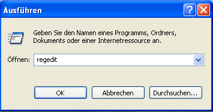
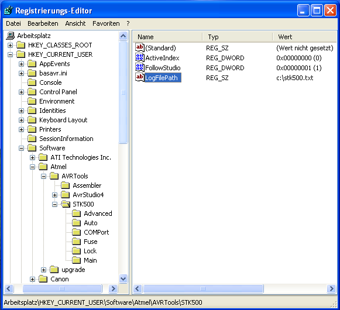

Sollten bestimmte Controller sich nicht flaschen lassen oder die Verifizierung fehlschlagen,F?hren Sie bitte folgende Schritte aus und senden mir den resultierenden Log.
- 1. ?ffnen Sie den Registrierungseditor in dem Sie "regedit" ausf?hren.
 - 2. Gehen Sie zum Pfad: HKEY_CURRENT_USER\Software\Atmel\AVRTools\STK500\
- 3. Erstellen Sie eine neue Zeichenkette (Rechte Maustaste > Neu > Zeichenkette) Namens ?LogFilePath?
- 4. Geben Sie den kompletten Pfad zu Ihrem LogFile ein z.b. "c:\STK500Com.txt" (Rechts-klick "LogFilePath" > ?ndern...
Nun sollte es so aussehen:

Programmieren Sie nun den Controller der fehlschl?gt, schliessen Sie das AVR-Studio und senden Sie mir den Log.